Aircraft Pitch: PID Controller Design
Key MATLAB commands used in this tutorial are: sisotool
Contents
From the main problem, the open-loop transfer function for the aircraft pitch dynamics is
(1)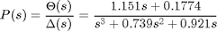
where the input is elevator deflection angle 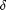 and the output is the aircraft pitch angle .
For the original problem setup and the derivation of the above transfer function please refer to the Aircraft Pitch: System Modeling page.
For a step reference of 0.2 radians, the design criteria are the following.
- Overshoot less than 10%
- Rise time less than 2 seconds
- Settling time less than 10 seconds
- Steady-state error less than 2%
Recall from the Introduction: PID Controller Design page that the transfer function for a PID controller is the following.
(2)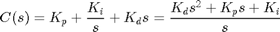
We will implement combinations of proportional (Kp), integral (Ki), and derivative (Kd) control in the unity feedback architecture shown below in order to achieve the desired system behavior.

In particular, we will take advantage of the automated tuning capabilities of the SISO Design Tool within MATLAB to design our PID controller. First, enter the following code at the command line to define the model of our plant P(s). Refer to the Aircraft Pitch: System Modeling page for the details of getting these commands.
s = tf('s');
P_pitch = (1.151*s+0.1774)/(s^3+0.739*s^2+0.921*s);
Proportional control
Let's begin by designing a proportional controller of the form C(s) = Kp. The SISO Design Tool we will use for design can be opened by typing sisotool(P_pitch) at the command line. This will open both the SISO Design Task window as well as the Control and Estimation Tools Manager window. The SISO Design Task window will initially open with a root locus and Bode plot for the provided plant transfer function and can be employed for graphically tuning a controller. Since we are going to apply the automated tuning function of the SISO Design Tool, you may close the SISO Design Task window.
The Control and Estimation Tools Manager window displays the architecture of the control system being designed as shown below. This default agrees with the architecture we are employing.

Since our reference is a step function of 0.2 radians, we can set the precompensator block F(s) equal to 0.2 to scale a unit step input to our system. This can be accomplished from the Compensator Editor tab of the open window. Specifically, choose F from the drop-down menu in the Compensator portion of the window and set the compensator equal to 0.2 as shown in the figure below.

To begin with, let's see how the system performs with a proportional controller Kp set equal to 2. The compensator C(s) can be defined in the same manner as the precompensator, just choose C from from the drop-down menu in the Compensator portion of the window instead of F. Then set the compensator equal to 2. To see the performance of our system with this controller, go to the Analysis Plots tab of the Control and Estimation Tools Manager window. Then choose a Plot Type of Step for Plot 1 in the Analysis Plots section of the window as shown below. Then choose a response of Closed loop r to y for Plot 1 as shown in the figure below.
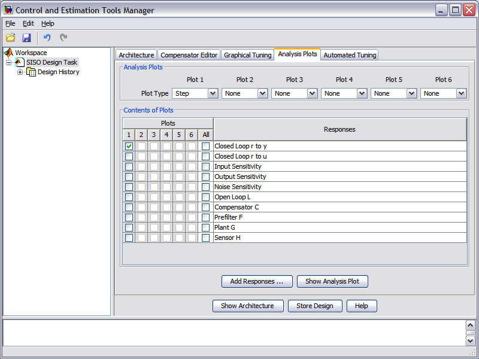
A window will then open with the following step response displayed.
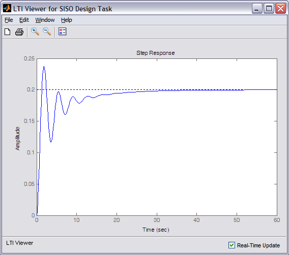
Examination of the above shows that aside from steady-state error, the given design requirements have not been met. The gain chosen for Kp can be adjusted in an attempt to modify the resulting performance through the Compensator Editor tab. Instead, we will use the SISO Design Tool to automatically tune our proportional compensator. In order to use this feature, go to the Automated Tuning tab and choose PID Tuning from the Design method drop-down menu. Then select a Controller type of P as shown in the figure below.

There are a range of options that can be chosen from the Tuning algorithm drop-down menu. These options range from heuristic techniques, like Ziegler-Nichols, to numerical approaches that search over all possible control gains to minimize some identified performance index that is usually related to the error e(t) in the control system. As these metrics attempt to minimize the error over time, they address both transient requirements such as overshoot and rise time, as well as steady-state requirements such as steady-state error. For our example, choose Parameter search from the Tuning algorithm menu. Then choose Integral Time Square Error (ITSE) as the Performance metric. This approach will search over a range of proportional gains to find one that minimizes the following metric.
(3)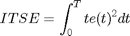
In order to be useful, a metric must always be greater than zero. This can be achieved by taking the absolute value of the error, or by squaring the error as is done in this case. An added effect of taking the square of the error is that large errors are penalized more heavily than small errors. The ITSE metric also multiplies the squared error by the time t. The effect of this is to minimize the contribution of a large initial error due to the step reference.
Once all of the tuning settings have been chosen, you then click the Update Compensator button. This algorithm found that a proportional gain of Kp = 0.01854 minimizes the ITSE metric leading to the following closed-loop step response.
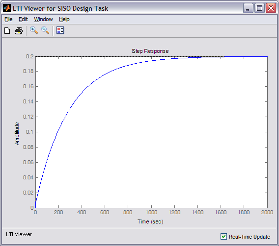
The resulting response is very slow, even slower than our somewhat randomly chosen initial gain Kp = 2. This seems to be related to the fact that our metric weighs error at larger values of t more heavily. Therefore, try changing the Performance metric to Integral Square Error (ISE) and click the Update Compensator button again. The gain that minimizes this metric is found to be Kp = 1 and the resulting closed-loop step response is shown below.
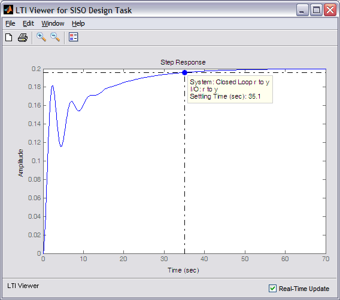
The resulting performance is improved, though the settle time is still much too large. We will likely need to add integral and/or derivative terms to our controller in order to meet the given requirements.
PI control
Recalling the information provided in the Introduction: PID Controller Design tutorial integral control is often helpful in reducing steady-state error. In our case, the steady-state error requirement is already being met. For purposes of illustration, let's design a PI controller anyway. We will again use automated tuning to choose our controller gains. Under the Automated Tuning tab change the Controller type to PI and leave the Tuning algorithm as Parameter search and the Performance metric as Integral Square Error (ISE). Clicking on the Compensator Update button then produces the following controller.
(4)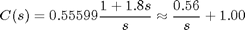
This transfer function is a PI compensator with Ki = 0.56 and Kp = 1.00. The resulting closed-loop step response is shown below.

From inspection of the above, notice that the addition of integral control helped reduce the average error in the signal more quickly. Unfortunately, the integral control also made the response more oscillatory, therefore, the settle time requirement is still not met. Furthermore, the overshoot requirement is no longer met either. Let's try also adding a derivative term to our controller.
PID Control
Again recalling the lessons we have learned in the Introduction: PID Controller Design tutorial increasing the derivative gain Kd in a PID controller can often help reduce overshoot. Therefore, by adding derivative control we may be able to reduce the oscillation in the response a sufficient amount that we can then increase the other gains to reduce the settling time. Let's test our hypothesis by changing the Controller type to PID and again clicking the Update Compensator button. The generated controller is shown below.
(5)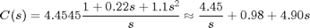
This transfer function is a PID compensator with Ki = 4.45, Kp = 0.98, and Kd = 4.90. The resulting closed-loop step response is shown below.
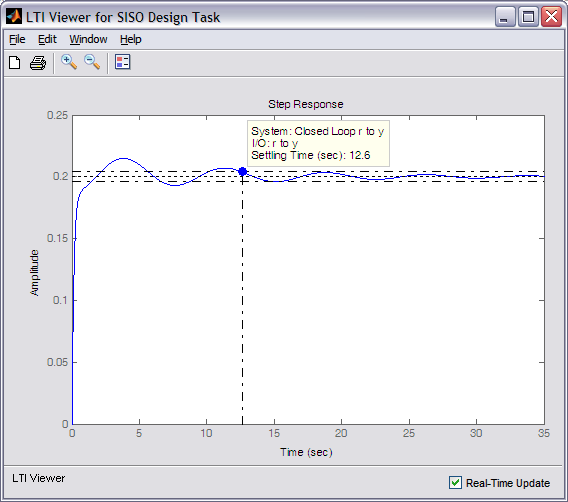
This response meets all of the requirements except for the settle time which at 12.6 seconds is a little larger than the given requirement of 10 seconds. We will attempt to increase the proportional gain in order to reduce the system's settle time. Increasing Kp means that we will no longer achieve the minimum possible performance metric, however, we are willing to do that in order to decrease the resulting settle time. Specifically, we will change Kp so that it equals 2. The resulting PID controller is shown below.
(6)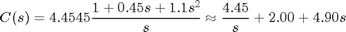
In order to see the effect of this compensator on the closed-loop step response, you need to modify the compensator C(s) manually. This can be done under the Compensator Editor tab of the Control and Estimation Tools Manager window. Specifically, the Complex Zero of the compensator needs to be modified so that it has a Real part of -0.2041 and an Imaginary part of 0.9314 corresponding to the numerator of our controller shown above. Once these changes are made, the step response should appear as follows.

The response shown above meets all of the given requirements as summarized below.
- Overshoot = 5% < 10%
- Rise time = 1.2 seconds < 2 seconds
- Settling time = 5 seconds < 10 seconds
- Steady-state error = 0% < 2%
Therefore, this PID controller will provide the desired performance of the aircraft's pitch.